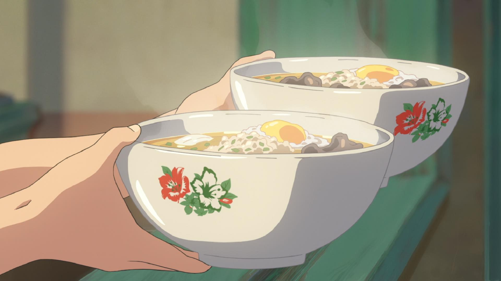
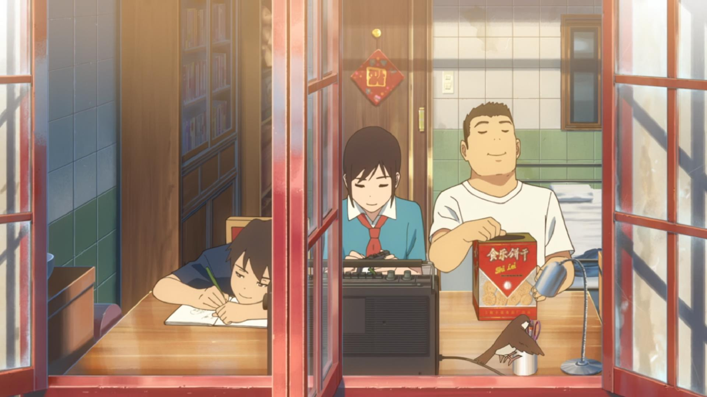
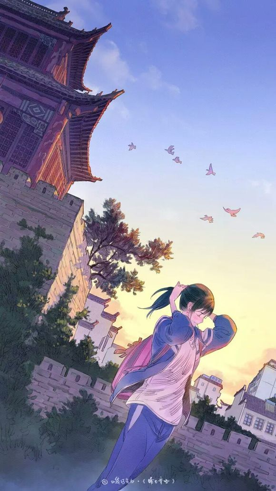

在观看电影之前，笔者就已经接收到了一些负面的情报，有关其制作日方公司CoMix Wave Film的功底毋庸置疑，和新海诚一起打造了一系列日本动画中画面最精致的动画电影，但是一旦牵扯到青春题材，编剧的功底往往比画面更为重要。
在艺术类院校，流传着这么一个说法：“最难拍的就是你最熟悉的东西”，事实上，因为审美距离的问题，好的青春电影要把握一个度，即不能太直白与粗糙，“爱你就大声喊出来”着实缺了点美感，同时也不能太抽象和戏剧化，这样观众难以感同身受。除此之外，青春题材的作品容易只讲故事而失去留给情感流露的时间与细节。
于是本文我们先具体看看各段的表现如何，再来看看如何总体评价这次中日合作的效果。
一、乡愁也许不只是一碗面
Chapter 1.一碗乡愁
主题：食
时长：17min
章回导演：易小星

其实在看之前就已经预料到了结果：有关青春的回忆除了恋爱和考试之外，还有重要的一部分是离不开食物的。
对于中国人来说，也许只有美食不可辜负。一碗热面，一碟炒菜，便是生活的味道。而对于学生们而言，门口的小吃摊子，食堂里的邪恶料理《舌尖上的中国》也是捕捉到了这一点，在第一季获得了巨大的成功，在第二季的制作中，加入了更多的人文要素，大众们的评价也是不低，因为即便少了份来自食物本身的感动，电影作为人的感情共鸣机总能赚得眼泪。
在结构上有点形似《舌尖2》的chapter1似乎也是准备依靠着中国人对于那一碗滋味的记忆来获得共鸣，而易小星缺失却了很重要的一点，那就是食物与主要人物的紧密联系。
在有关三鲜米粉的记忆中，有祖母，有名厨夫妻，有小摊子的一家三口，有喜欢的女孩子，口味在变，人物在变，而影片的节奏就像变化的速度一样快，一段感情还没沉淀下来，就已经径直走向了下一个人物。如果说是这段回忆是给予小镇的，似乎能说得过去，但是对于观众而言，易小星似乎在拍了众多大众商业电影之后失去了对于定位为艺术片的《肆式青春》需要的浓烈感情。
在这17分钟的短小篇幅中，有着一个外层嵌套的现实和里层内含的三段感情回忆，平均每段感情只有三分钟的时长，使得故事难以展开只能靠旁白来推进。若参考新海诚作品作品如《秒速五厘米》、《她与她的猫》等使用大段落内心独白的作品，其实也会去精心安排节奏：何时使用现实时间甚至是更长的时间来放慢节奏，何时用短镜头带过次要情节来加快节奏，节奏并非一成不变而是有着轻重缓急，这样整个故事也会有重要的情节和情感铺垫。
鉴于暗恋的无疾而终，三段故事最重要的莫过于对外婆的感情，但是和外婆之间的互动似乎只剩下了三鲜米粉，对白、动作等细节的缺失失却了些生活的味道，以至于最后外婆的去世难以在观众的心中引起太多的共鸣，不如仅仅将这十七分钟像《某人的目光》一样将重点放在亲情的部分，有关外婆、家庭以及三鲜米粉等等生活的点点滴滴经过时间的积淀，最后的去世与小镇漫步才会让人潸然泪下。
记忆中的味道不复存在，曾度过数个四季的小镇也早已物是人非，也许只有当年的那份感情才是真实隽永的。
二、独生子女时代的姐妹花
Chapter 2. 霓裳浮光
主题：衣
时长：26min
章回导演：竹内良贵
竹内良贵选择了在广州打拼的姐妹花作为主人公，讲述了因为父母双亡的缘故分开居住的姐妹的故事。靠着漂亮的外表和姣好的气质，姐姐先一步来大城市打拼，成为了职业模特，后接来妹妹一起生活，一起开始了在大城市的打拼生活。
这一段其实从出发点就没有太多的中国气息，因为在如今的时代，非独生子女少之又少，兄弟姐妹相互支撑的年代早已过去，自从计划生育开始实行以来（1982年至今），年轻人独自走南闯北早已成为了中国的常态。
而如果说有关“食”的主题往往是有关记忆中的味道，那么谈到“衣”，中国人记忆中的往往不是不变，而是改革开放带来的巨大变革，而这是第一次做动画监督的竹内良贵所未能捕捉到的。在我们小时候，上学期间的女孩子似乎是很少穿裙子的，那时候人们的思想远没有现在这么开放，在校服之外，牛仔裤和运动裤才是女学生的标配。爱美的权利似乎是是不属于女孩子，无论男生女生，学习才是脑子里唯一允许装载的程序，成为服装设计师和模特似乎是离女孩子特别遥远的事情，因此在观看之后，身边的大部分人似乎都很难对这段故事产生共鸣。
在剧情安排上，这段故事也着实显得十分流水账，勤劳的妹妹和略显没用的姐姐（自理方面）、父母双亡、见异思迁的渣男、心机婊、老实人的男配角等设定似乎都在如今的日本商业动画中见怪不怪。现场总编辑问姐姐的那段话原本别有深意，但似乎并没有在后面得到很好的诠释。除此之外，长达26分钟的段落甚至感受不到一点姐妹之间互相支撑的亲情，小时候背景的草草带过，相互依赖的蜻蜓点水，反倒是“贵圈真乱”的描写倒不少，而姐妹冲突的那一段对白思路甚至有些让人摸不着头脑，若去掉亲姐妹的设定，二人更有种为了梦想共同努力的好朋友的既视感。
原标题叫做“小小时装秀”，但是真的除了背景故事和结尾，又有多少“小小时装秀”的成分呢？
考虑到这是新海诚御用3DCG主管的第一次监督，我想我无法苛责太多，只能说日方的监督还是缺乏对于中国历史和现状的考究，导致这一段成了全篇观感较差的一段。
三、一盘磁带中的恋情
Chapter 3. 纤雨初晴
主题：住
时长：25min
章回导演：李豪凌

这段是公认最受期待的一段，李导将故事的舞台放到了上海，将故事聚焦到来自青梅竹马间的恋情与中考带来的别离中。
李墨、潘东、小雨是自幼一起长大的好朋友，居住在有着上海特色的旧弄堂石库门。在那个情窦初开的年纪，小雨喜欢上了长相帅气又性格开朗的李墨，当然，李墨也对小雨暗怀情愫，而潘东对于“小俩口”的感情自然是看在眼里。
对于后来故事的发展也许大家都已经见怪不怪了，因为“该说的话没有好好说”，互相错过了彼此，而倔强的李墨又不肯说出事实，导致二人的关系因为远距离而越走越远。
其实很多人在和我说最后一段的出彩之处时，我想得最多的却是“同行衬托”，两段故事的混乱使得讲了一个完整故事的《上海恋》显得似乎情感充沛、逻辑完整。但是回头来想想，这段故事除了前期对于二人回忆中的感情处理得十分妥当以外，到后期的剧情走向却越来越快，甚至结尾让人始料未及。不难想象，在这分离的日子里，李墨对于往昔记忆的态度、对待工作生活的想法伴随着时间的推移一定会留下变化的痕迹，但是无论是李墨还是其他两人依旧是一个缺乏人物弧光似乎只是看上去成熟点了而已。时间的流逝是否让彼此学会理解？李墨如何改变想法回家开起了旅店？小雨为何会重回旧地来寻找自己的初恋？这一切都在最后30秒被草草带过。不是说这样处理不行，无论是《秒速五厘米》还是《你的名字》，最后的重逢一定带有含义的，前者代表着与过去的告别，后者代表着命运，但是《上海恋》上海恋给人带来的却是不愿意长大的“童话感”，将前面沉重的“可惜没如果”狠狠地击碎。
本段的主要线索放在了我们小时候上音乐课和英语课必备的复读机上，这是十分聪明的做法。用古董一样的载体来记录过去的做法让人不禁想起了《星际牛仔》有关Faye过去的那一集，盒式录像带的过时使得记忆刻上了时光的烙印。以至于当我们看到带着刮痕的录像中小小的Faye为未来的自己打气时，为那一句句“我-自-己-加油！”潸然泪下。时间带来的是不可挽回的距离感，陌生感，但是当那记忆中的一幕幕重新映入脑海中之时，没有人不想乘坐时光机回到过去吧。
再说到本段的主题“住”，和上一段的“衣”一样，也许只是个没有用的名号，最后很难被称之为主题。其实无论是北京还是上海，老城区的更新换代永远都是老一辈心中的痛，传统符号的破碎，换来的是现代化建设的进度表。和过时的复读机一样，他们可能是被时代淘汰的产物，但也是在那个物资匮乏的年代人们心中少有的寄托。
四、有关青春的一些记忆
总体看来，动画本身还是有很多我们记忆中的模样，在国产青春题材的作品中，高考、早恋、校服、城市的变迁都是常见的元素，但近几年却有点难以创新，套路逐渐固定，也难有《那些年》、《中国合伙人》那样真正让人共鸣的作品。近段时间撤档的《昨日青空》抛开电影版不谈，原作的绘本是我十分喜欢的作品，其实口袋巧克力无论在《昨日青空》还是《也许那一瞬间》中都很好把握了那个时代的回忆。在《昨日青空》的绘本中，夕阳下宽大的校服下勾勒出的女生独有的曲线、小巷子里青涩的初吻、游戏厅释放自我的拳头、雨中不顾一切的凄美之舞，在口袋巧克力老师的淡淡的笔触下显得是那么的美，但是看到预告中精致的画面的时候，总觉得少了点什么：也许已逝的高田勋老人对于《岁月的童话》的处理会显得更加浪漫吧。

其实对于各国青春题材的作品而言，冒险、尝试、跌倒、误会、错过总是少不了的，但是和出生在互联网时代的00后不同，对于80后90后中国人的青春而言，在高速变革的年代里我们青春的记忆是伴随着社会变革和祖国腾飞的，我想对于这一点《中国合伙人》是处理得是十分典型的，当年的大事件、流行歌曲、过时的电器和地标是唤醒共鸣的最佳手段。除此之外，如何还原出那个年代（青春岁月）和如何让主人公在摔倒中成长是青春题材的作品必须要思考的，青春题材终究只是一个外壳，在可以不断犯错的年纪，成长和失去才是永恒的的主题。
回头看年轻的时候，也许会觉得尴尬，会觉得自己很幼稚，但正是那时候的幼稚，才让我们长大成现在的模样，不是吗？
而如果脱离了学生年代，二十岁的青春则更多的要面对生存的压力，就业、结婚、上有老下有小等等学生年代不会考虑的问题一下子涌了上来。但是因为描写社畜时代的青春作品较少，也许等到《也许，那一瞬间》动画化的时候，我们再谈一谈吧。
对于备受期待的中日合作结果，不得不承认日方的制作水准真的很高，但是我们不能忘却形式为内容服务的本质，好的剧本是剧情类影视作品的关键所在。横向对比一下，新海诚和CoMix Wave Film制作的几部电影画面都很美，但是每部电影的剧本也都足够优秀。虽然很遗憾这次每个人只有20分钟左右的发挥空间，但是如何在短短的时间内讲好故事也是对于三位导演剧本功底的一次考核：时间不够不应该成为讲不好故事的理由，每段故事的铺垫要多久，情绪爆发点在哪里，对白如何设计，如何把握讲故事的节奏感这些都是未来的中国动画导演们需要去斟酌的。
最后的最后说点题外话，“衣食住行”作为主题是好的，但是除了食似乎点题了以外，其他的三个子命题是否很好的有表达出来呢？而为了“行”这一主题把三个故事的主人公都丢在飞机场又是否妥当呢？
这种问题，还是丢到一边，下次再琢磨吧。
声明： 专栏所有投稿文章仅代表作者本人意见，不代表本栏目立场
本系列版权归轻之文库所有，未经许可禁止一切形式转载
文章配图来源网络，如有疑问请联系我们
轻之文库专栏 Vol.1
轻之文库专栏是为轻小说创作者提供的一个知识与信息交流栏目。
主要交流围绕轻小说产业与内容创作领域，覆盖泛二次元相关领域，希望借助这个平台可以博采各家之所长，探讨产业发展、作品解析以及内容创作的运作规则。给轻小说创作者提供有价值的参考资料，为整个创作环境的改善添砖加瓦。